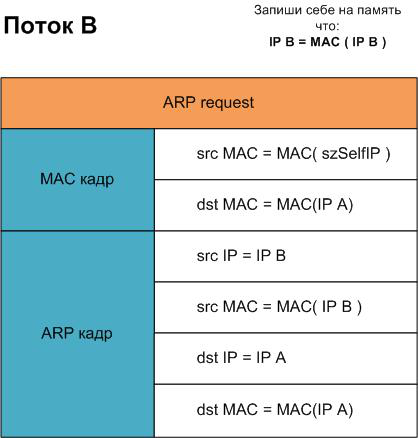
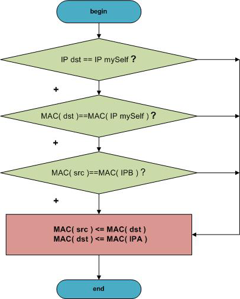
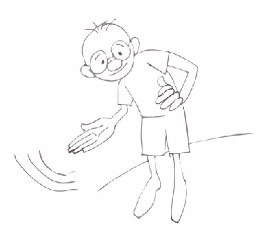

Miracle in a small back office. Part 3
I'd like to welcome those patient enough to get so far, as this tutorial can wear you down ))).
We remember how in the last step running the program was not recommended.
In this step, we will eliminate this inconvenience.
The thing is, the program reviewed in the last step was generating an incorrect match of IPA - MAC (IPAttack) and IPB - MAC (IPAttack) for the machines being attacked with its two threads.
So if we just stop these threads and do not correct the false match for the correct one IPA - MAC (IPA) and IPB - MAC (IPB), then the machines attacked will have to wait for updates to their local ARP-tables for a while, or simply wait for their reboot.
But we want to be smart and organized about it.
To correct the data corrupted by previous threads, we run the same threads again, but the new flows will give to both machines the correct IP - MAC matches.

That's what we are going to do within the ResetSpoof () function. We launched two new threads with real data (Picture. 3.1.). We allow 5-10 seconds for the threads to "persuade" the machines attacked to change the data in the local ARP-tables. Then we just stop these threads and free the memory. That's it, the program can be safely closed.
Only one question remains - how can a user catch a sign of completion of the program in a console application? This problem can be successfully solved with the SetConsoleCtrlHandler () function. You will find a simple example of how this useful feature is used by this path
"sources/__sheva740/miracle/03/files/setConHandl/setConHandl.asm"
Experiment with it, run it and type Ctrl + C. In a few seconds, the process will be complete and everything will become clear.
So by this path
"sources/__sheva740/miracle/03/files/arpspoof_sub2/src/arpspoof_sub2.asm"
... we have a program that can be safely run. As a result of its execution, the network exchange of the machine attacked (IPA) with the gateway (IPB) will be stopped. At the same time, the program will be completed correctly, restoring all the matches on the hosts attacked.
Remember the second step where we have set ourselves the objective of intercepting traffic from IPA to IPB? How do we achieve that?
This can be done by the means of WinPcap. In its core there is a function pcap_loop()
What is this function?
Having opened the interface by pcap _ open _ live () and having received its handle, pass it to pcap _ loop (). This function will receive a pointer to all the headers of packets received / transmitted packets from/to this interface. That makes it even simpler. )))
Let's have a look at its header
pcap_loop(adhandle, 0, offset packet_handler, NULL)
where
adhandle is the public interface handle mentioned above;
offset packet_handler is the callback address of the function that should also be properly arranged.
Here is an extract from the certificate:
void packet_handler (u_char *user, struct pcap_pkthdr *phrd, u_char *pdata)
where
user - is a user-defined parameter that is passed to the pcap_dispatch sub-program.
phdr - is a pointer to the pcap_pkthdr structure that precedes each packet.
pdata - points to the packet data. This allows users to define their own packet filtering process.
That's the way we are going to do it. From within the packet_handler () function, we call the ForwardPacket () function. We will receive the packet body (pktdata pointer) and analyze it from within this function.
Here's the long-awaited moment of receiving the packet. The packet has come a long way
pcap_loop() – packet_handler() – ForwardPacket().
In the last function we have a pointer to the packet's header and body.
Let's now open the source of the ForwardPacket () function and use it for tracing.
We get the header of the tcp-packet, taking sender's IP and destination IP from it.
We begin catching and handling the IPA-IPB thread.

Changing the packet header, send it back to the network.
Begin to catch and handle the flow of IPB-IPA.

Changing the packet header, send it back to the network.
It seems clear?
- If I received a package from the IPA, I change it so that it went to the IPB.
- If I received a package from IPB, I change it so that it went to the IPA.
By the way this point in the program can be completed function ForwardPacket () or more complex processing, God forgive me - stand-in, packet data, there will be very comfortable working with him.
Let's summarize. We've got a fully working program by this path:
"sources/__sheva740/miracle/03/files/arpspoof/src/arpspoof.asm"
Also, in the files folder you will find a simple program to detect this type of attack. This console program will show which machines on the network changed their MAC addresses. Then, if you understand where addresses are being changed, you need to get on that machine and run sniffer to determine the host sending ARP-packets with false MAC-addresses. The one sending them is the "perpetrator." ))
You can find the program monitoring the change of MAC addresses here
"sources/__sheva740/miracle/03/files/macmon/macmon.exe"
Just run it and wait for messages.

The project was not too difficult.
We managed to figure it all out, draw algorithms and catch patterns.
We were also able to provide the intermediary results of the development.
Support tools have also been developed.
Overall, it was pretty fun.
But everything ends one way or another, making way for something even better ))).
So, goodbye friends!
Sources: sources/__sheva740/miracle/03/files
______________________________
__sheva740
2012
Inception E-Zine